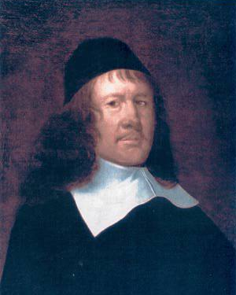
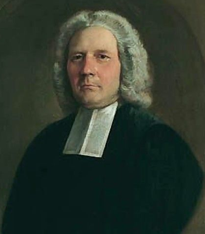

The Rev. John A Fitch, Vicar of Reydon near Southwold, where 9. James Hingeston had been Vicar, worked on a history of the family. John did not publish his work in full, although parts found their way into parish and school histories, and he was responsible for establishing that several of Thomas Gainsborough's paintings were of members of the Hingston family. Because of this connection, John deposited his papers at the Gainsborough Museum in Sudbury, Suffolk, where I was able to consult them. Entries below that refer to "Fitch" are derived from these papers.
The new DNB entry for John Hingston has been written by Lynn Hulse, who also wrote an article about his life in Vol 12 (1983) of Chelys, the magazine of the Viola da Gamba Society , which can be downloaded as a .pdf file. John's work was the subject of a PhD thesis in 1956 by Emil Bock, which includes a chapter about Hingeston's life.
See also 'A Holding, Uniting-Constant Friend': The Organ in Seventeenth-Century English Domestic Music PhD thesis by David Robert Stuart Force (2019)
This document has been put together from a number of sources, including the work of Fitch, Hulse and Bock, as well as Grove and the DNB, lists of undergraduates at Cambridge and Oxford University, and two books about the history of Ipswich School ("Ipswich School: 1400-1950" by Gray and Potter, and "A famous Antient Seed-Plot of Learning" by John Blatchly (ISBN 0954491505)). It also uses information from King's study but he makes no reference to John the Organist. The parish registers of St Laurence and St Michael le Belfry, both in the city of York, were also consulted.
Much of the published information omits one generation; they agree on the descendants of 5. Peter (born c.1667) but refer to him as the nephew of 2. John or the son of 3. (Unknown) , both of whom were born about 1600. I have written this on the assumption that there was another generation ( 4. Peter ) in between.
The University of Hull Library has a paper DDFA2/17/1 that shows a Thomas Hingeston witnessing a deed of sale for land just outside Walmgate Bar in York and in the Parish of St Lawrence date 11 Jul 1610.
The registers for St Laurence start in 1606, and there is a break in the baptismal register from Dec 1609 to 15 Nov 1612. The entries up to this date are in Latin, while the ones after are in English. This may mark the change from Thomas Hingston to his successor, and the gap may mean that Thomas was unable to fulfil his duties as vicar after 1609. John's will refers to Frances, the daughter of an (unnamed) half-brother, so one of John's parents was married twice.
The Hingston name does not appear to be common in Yorkshire, but there would appear to be another Thomas Hingston in the parish of St Michael le Belfry, also in York. He and his wife Lucy had children, and given the overlap of dates with those in the parish of St Lawrence it is likely that there are two Thomases. Given the rarity of the Hingston name in Yorkshire, I assume that it is not merely a coincidence but that the two men were related; since it was common for the eldest son to be given the name of the father, I assume this is the relationship here.
My working hypothesis is that Thomas, the Vicar of St Laurence, was old by the time 2. John was born. Since John had a half-brother, I assume that 1. Thomas was married twice and that 13. Thomas was his son by the first marriage, while John, Arthur, Isabella and Elizabeth are children of the second. It is certainly possible that young Thomas was having his first children while his father, 1. Thomas was having his last children. However, this reading may be wrong. If my interpretation is correct, it is likely that 13. Thomas was born about 1580, so 1. Thomas would have been born in the 1550s.
If this Thomas is descended from the Devon Hingstons, we thus have to look for the period before parish registers were in existence, and it is likely therefore that Thomas' father would be amongst those listed in the Devon Lay Subsidy Rolls , which exist for the years 1543 - 1545. These include two Thomas Hingstons, one at Diptford and the other at East Allington; either could be the father of 1. Thomas if the name was handed from father to son. The East Allington Hingstons are probably the progenitors of Tree HH , although no link has yet been proved. 1. Thomas here would also be about the same age as HD#1. Andrew who stands at the head of Tree HD. All of this is conjecture.
I have recently (Jan 2021) been given information that shows that Thomas did come from Devon, but did not go directly to York. That is discussed in detail below.
1. THOMAS HINGSTON would have been born in about 1550. There seem to be no other Hingstons in Yorkshire so it is likely he was born elsewhere. The first reference we have to him is in the Church of England Database (CCED), which shows that he was ordained on 18 Jul 1588 at the Chapel of Castrum de Rosa in Carlisle by the Bishop, John May. I assume this refers to the Bishop's Palace that was at Rose Castle near the village of Dalston, about 8km south of Carlisle. Thomas then turns up in Durham. He is mentioned in a PhD Thesis by Brian Crosby on "The choral foundation of Durham Cathedral" which lists him, in Vol 2, as:-
"HINGESTON, Thomas born: c.1549, in Devon (Hunter 32, f.261V); deacon: April 1587 (Barnes); minor canon: '-1586-7 1592-3 (TRs) i[nstituted?] sacristan: 1588-9 (TB) i[nstituted?] incumbent, St Margaret's : Invention of Cross (3 May) -Sep 1589 (TB) and comments that: Whilst Hingeston was Sacristan he authorized the payment of 10s. to the bell-ringers on the anniversary in 1589 of the Coronation. Because of an outbreak of the plague at least some of the ringers had had to be hired. Hingeston was presumably a bachelor, for a bill dated 19 December 1589 lists repairs to his 'Room'. Some 7s-9d was expended on a new door, a lock, and repairs to the floor (all PDLP, Box 25)."
The Hunter manuscript, which is available in Durham Cathedral Library, is a set of depositions made by individuals in legal cases. The actual deposition is in English, but is of little interest; the introduction, in Latin, says something about who the witness was. I am grateful to Prof Stephen Oakley of Emmanuel College for a translation. It reads "Thomas Hingston, one of the lesser canons of the Cathedral of Durham, where he has been in position around the time of a year and a half, or thereabouts, and of age 40 years old or thereabouts, having originated inside the County of Devon, freely deposits and speaks about the articles mentioned above." It is dated about 1590. This confirms that Thomas was born in Devon in about 1550.
Thomas then seems to have moved to York because he was appointed to the Vicars Choral at York Minster in 1595, and remained a member until his death in January 1619/20. He seems to have been endowed with some administrative ability, because he was frequently appointed chamberlain or auditor of the Vicars Choral, responsible for collecting rents from York tenements to finance the upkeep of the Bederne, the college of the Vicars Choral (now Bedern Hall). He was appointed vicar of St. Lawrence in April 1599, a post he held until 1613. Thomas had chambers in the Bederne, as well as lands in Walmgate and the parish of St. Lawrence.
There are two records of Thomas in the Cause papers at the Borthwick Library. In 1596, when he was described as a clerk, both Thomas age 45 (so born ~1551), and Dorothy his wife, age 25 (so born ~1571) were witnesses in a case of defamation between two women. In 1611 he was a witness in a case relating to neglect of duty by a member of the Bederne; Thomas was described as 63 (so born ~1548) and a Vicar Choral of York Minster
It is presumed that Thomas married twice. If my reading of the situation is correct, his eldest son 13. Thomas below, who was married in 1606 must have been born before about 1586 (so before Thomas turns up in Carlisle and certainly before he could have married Dorothy). This makes sense of John's will where he refers to a half-brother. There is no marriage record for Thomas in the surviving parish registers for the diocese of York. The children of Thomas Hingston are believed to include:-
I have not tried to apportion the children above to the two marriages; we know that the second marriage occurred before 1596, so any of the children other than 13. Thomas could have been Dorothy's. John mentions his half-brother's daughter Frances Grange in his will but she is probably one of 13. Thomas' children. All the other relatives mentioned in the will are referred to as "brother" or "sister", so all the other children may have been Dorothy's.
It is at least plausible that Thomas' first marriage occurred before he was ordained at Carlisle, and he may even have been a widower by then. He may well have married Dorothy at Durham, which would explain why I couldn't find any record in York.
The children of Thomas Hingston and Lucy White include:-

John Hingston
In his 1905 letter , WEH implies that John was the son of Walter Hingston ( HD#2 ), but I have no idea on what he based that judgement. The Devon sources make no mention of a possible link and following discovery of John's will and information from York I am now conviced that this link is wrong.
The following is compiled from various sources, but relies for much of its detail on Hulse's biography of John Hingeston published in Chelys in 1983. That paper gives detailed sources for much of this information.
John appears to be the only one of Thomas' children to have received professional musical training. Presumably Thomas as a Vicar Choral had musical ability and perhaps John was the only one who showed sufficient aptitude. There can be little doubt that Thomas was instrumental in securing a place for his son in the choir at York Minster; it is not known when John Hingeston joined it or for how long he benefited from the education the choir offered, since choristers are not mentioned by name in either the Chapter Acts or the Chamberlain’s Accounts. Two lists of choristers on the end-leaves of a Medius Decani part-book confirm that he sang in the cathedral choir in 1618 and 1619, but he may have been a member for some years before then. Hingeston would doubtless have received a general education in the choir school and organ tuition from Thomas Kingston, the cathedral organist. His first encounter with the Cliffords probably occurred on 17 March 1619/20 when a boy, one ‘John of Yorke’, was hired by Francis (Earl of Cumberland) to play ‘upon the organs’ at Londesborough as part of an entertainment given for the Lord President. Thomas Littell, the Earl’s steward at Londesborough, records that the boy was to ‘come againe after the assyzes to serve my Lo.’; it seems likely enough that ‘the boy’ was John Hingeston. On 17 March 1620 he played ‘upon the organs’ in an entertainment given for Emanuel Scrope, Lord President of the Council in the North, by the Yorkshire nobleman Francis Clifford, fourth Earl of Cumberland, a ‘worthy lover and patron of that facultie music’. Hingeston joined the Clifford household in 1621; two bills for his apparel confirm that he entered the Earl’s service at least six months before his apprenticeship began in August 1621. He was sent to London the following month, in the care of John Tailor, steward of Skipton Castle, ‘to learne to play’ with the organist and composer Orlando Gibbons, whom he later described as ‘my ever hono'rd Master’. Some time before February 1625 Hingeston returned to the Clifford estates at Skipton and Londesborough in Yorkshire, where, in addition to his musical duties, he served as butler and yeoman of the wine cellar.
Francis Clifford, 4th Earl of Cumberland from 1605 to 1641, was, according to William Byrd, a ‘worthy lover and patron of that facultie music.’ Thomas Campion goes so far to describe Skipton Castle as ‘the Muses pallace’. Francis’s enthusiasm was shared by other members of the Clifford family. His son Henry studied the lute in Paris during his Grand Tour in 1610-11; after his return to Yorkshire he perfected his skill on the lute and viol, and assisted his father in the organisation of musical entertainments. Henry’s wife, Lady Frances Cecil; their daughter, Elizabeth, and son-in-law, Richard Boyle, Lord Cork, all appear to have been active musicians. Initially, the Earl’s interest in music led to the appointment at Skipton in about 1608 of a small group of professional musicians and servants with some musical skill. When John Hingeston joined the household in 1621, the organisation of the Earl’s band had just passed to John Earsden. The only other musician was Edward Cressetts, a man-servant who owed his musical training to Francis Clifford’s patronage. In 1625 the band was increased to four by the addition of the violinist William Hudson. Throughout these years, as was common practice, waits (musicians whose business was to play before the Mayor and Aldermen of a city on festive occasions) and other travelling players supplemented the household staff for major entertainments, festivities and ceremonial occasions.
A substantial collection of instruments was available to the musicians; two chests of viols, two violas da gamba, a lyra viol and a variety of plucked string instruments, including lutes, theorboes and a ‘citharen’. Violins of a sort were first introduced in 1617 when three treble viols were sent to York for cutting, although not until 1625 were true violins acquired. Hingeston had access to two chamber organs, a virginal, a harpsichord, and a ‘virginal with a wind instrument in it’ purchased by Francis Clifford in December 1620. Many of these instruments accompanied the Cliffords as they moved from one residence to another, though Francis is known to have borrowed keyboard instruments for Hingeston when in London.
Three rooms were generally set aside for the performance of music. At Londesborough an organ was placed in the great parlour where the family dined in private. At Skipton a music chamber existed, though Francis seems to have preferred his musicians to play in the ‘billiard chamber’, where an organ and a harpsichord were installed (perhaps in an effort to satisfy simultaneously his two obsessions, gambling and music). Hingeston’s role as organist is not defined, but he probably participated in both secular and sacred music. String consorts and songs were regularly performed during and after dinner, the more proficient members of the family also playing. The Cliffords possessed ‘diverse musick bookes’, including lute songs, masque books and consort parts, some purchased from London, some composed by Mason and Earsden. There is no documentary evidence that Hingeston was commissioned to write consort music for the Earl’s band, though several of his fantasy-suites for viols belong stylistically to this period. His interest in the viol may have been encouraged by the quantity and quality of music performed. In addition to their daily household duties, the Earl’s musicians took part in ceremonial entertainments or masques. Francis Clifford staged at least four during his earldom (an unusually high number, considering the labour and costs involved), three during Hingeston’s employment. There is no indication of the expense of the two masques of 1632 but the accounts for Comus, performed in 1636, include ornate costumes and payments to actors and city waits, suggesting that it was on a lavish scale. We do not know how elaborate the services were in the family chapel at Skipton, but the purchase of psalm books’ implies that Hingeston did little more than accompany simple psalm settings.
Besides their musical duties, Hingeston and his fellow musicians performed general household chores. This was normal practice in private houses at this time. Hingeston served as butler and yeoman of the wine cellar for at least ten years and was responsible for purchasing wine, beer, bottles, corks, glasses and various necessities for the buttery. It is unusual that during his twenty-five years’ service with the Clifford family Hingeston never received a salary. Other members of the Earl’s band enjoyed a regular salary so it is surprising therefore, that Hingeston received neither a comparable wage nor a grant of land in lieu of money. Although Hingeston may not have enjoyed financial remuneration from the Earl, he did receive livery, board and lodging in return for his services and he had reserved chambers at Skipton Castle. He may have been paid from another source, possibly through employment as organist to Skipton parish church. After Francis’s death in 1641, Hingeston’s services were retained by Henry, 5th Earl of Cumberland, and subsequently by his daughter, Lady Elizabeth Boyle. The musicians’ band was dispersed in 1645 when Skipton Castle fell to a Parliamentary army.
It is sometimes stated that Hingeston was a member of the King’s Musick during the reign of Charles I, but no payments to him are recorded in the surviving court documents. It may be that he was being confused with a John Hickson (Hixon) ‘musician for wind instruments’ who served Charles I from November 1638. Alternatively, it may have been deduced from the fact that a number of musicians who were appointed to the King’s Musick in 1660 were reinstated in positions they had held prior to the Interregnum. In fact, there are no references to Hingeston from 1645 until 1651, when he is listed in John Playford’s Musicall Banquet as one of nine ‘excellent and able masters’ for the organ and virginal. To catch Playford’s ear, Hingeston must presumably have been resident in London for a reasonable time before 1651.
It is not known what brought Hingeston’s talents to Cromwell’s attention or the date of his appointment but it seems reasonable to suppose that he was engaged early in 1654. In March of that year, Col. Philip Jones and Walter Strickland were appointed by the Council of State to propose arrangements for establishing the Protectoral ‘family’ or household, with the result that in April Cromwell moved to the royal palace at Whitehall. The establishment of a band of musicians, in imitation of the former King’s Musick, may have occurred at the same time. By 29 February 1655/6 five musicians were employed and paid at General Mountagu’s suggestion out of the ‘monument money’ at Westminster. Although Hingeston is the only one mentioned by name, the other four were probably the signatories with him of the petition sent to the so-called Council for the Advancement of Musick in February 1656/7: William Howes, Davis Mell, William Gregory and Richard Hudson. Shortly afterwards, John Rogers, Thomas Mallard and Thomas Blagrave, plus ‘two lads brought up to music’ must have joined ‘his Highness Musique’, possibly in response to the petition; all ten are included in the list of mourners in Cromwell’s funeral procession in 1658.
Hingeston was paid £100 per annum as organist to Oliver, Lord Protector, who had the organ of Magdalen College installed in the palace Hall of Hampton Court and he supposedly trained two boys to sing latin songs at the Cockpit in Whitehall where Cromwell also had an organ. This is slightly surpising given that Cromwell did not allow singing or organ playing in churches.
Some uncertainty exists as to the title of Hingeston’s post and the duties attached to it. It has been suggested that he was the Protector’s organist but his formal title was probably ‘Master of the Music’, as noted by Prestwich in his description of Cromwell’s funeral. He would have been in charge of Cromwell’s band of musicians, and fulfilled a role which combined the administration of the band with the organisation of musical entertainments at Court. Jongestall, the Dutch Ambassador, writes in 1654: "At the table of my Lady Protectrice dined my Lady N[ieuport], my wife, my Lady Lambert, my lord Protector’s daughter and mine. The music played all the while we were at dinner. The Lord Protector had us into another room, where we had also music, and wine, and a psalm sung which His Highness gave us" It may be presumed that Hingeston would have accompanied Cromwell on the organ on such occasions. For major state functions, other musicians were also recruited. William Dugdale, writing of the wedding of Cromwell’s daughter, Frances, to Lord Rich, states that at the wedding feast kept at Whitehall they had forty-eight violins and fifty trumpets and much mirth with frolics besides mixt dancing (a thing heretofore accounted profane).
Hingeston was probably responsible for these musical arrangements, and since some of his compositions date from this period, he may also have been specifically commissioned by Cromwell to write consort music for performance at Court. Roger L’Estrange’s reported that "Being in St. James his Parke. I heard an Organ Touch’d in a little Low Room of one Mr. Hinckson’s. I went in, and found a Private Company of some five or six Persons. They desired me to take up a Viole, and bear a Part. I did so; and That, a Part too not much to advance the Reputa[tion] of my Cunning. By and By (without the least colour of a Design, or Expectation) In comes Cromwell; He found us Playing, and (as I remember) so he left us". Hawkins also suggests that Hingeston was music master to Cromwell’s daughters, but there is no evidence to substantiate this claim except Playford’s acknowledgement of his skill as a keyboard teacher.
Hingeston was the first signatory of the petition to the Council for the Advancement of Musick. The petition declares that the study and practice of music in England has declined as a result of the dissolution of cathedral choirs and the death in want of many of the ‘skilfull Professors’ of music, and proposes inducements to the education of new talent. These are twofold: first, the incorporation of a college of musicians with powers to regulate the practice of music and instrument-making (in which respect the petition requests a mandate similar to that formerly granted to the Westminster Corporation Of Music); and second, the reappropriation of the sources of income that musicians had enjoyed under Charles I, in order to maintain and encourage the present practice of music. The petition was submitted on 19 February 1656/7 to a specially formed committee, the members of which were drawn from the Council of State. The petition has usually been interpreted as evidence of Hingeston’s concern for the plight of fellow musicians, a concern which is well attested during the Restoration, but it is possible that Hingeston and his fellow masters of music were also interested in their personal advancement.
Hingeston’s final act as Master of the Music was to head the band of eight musicians and two lads ‘brought up to music’ who marched in the Protector’s funeral procession from Somerset House to Westminster Abbey on 23 November 1658. This was an act of silent homage: there is no report of any music at the funeral, apart from trumpets and drums. However, it was acknowledged that the Protector had ‘entertained the most skilfull in the Science [of music] in his pay and family’, a compliment paid to Hingeston and his band by James Heath who was a writer not favourably disposed to Cromwell. It is not known what became of Hingeston during the Protectorate of Richard Cromwell and the subsequent Republic.
When Charles II accepted the throne in 1660, his policy of conciliation extended to the appointment of most of Cromwell’s musicians to places in the King’s Musick. Hingeston, however, lost his post as Master of ‘his Highness Musique’; instead he was appointed instead, on 23 Jun 1660, as a violist in the Private Musick at an annual salary of £50. He is also listed as one of ten members of the Private Musick who attended in the Chapel Royal from 1660 to 1669. Pepys, in an entry to his diary for 14 October 1662, describes one of the services in which Hingeston may have participated: "Thence to Whitehall Chapel, where sermon almost done and I heard Captain Cookes new Musique, this the first day of having vialls and other Instruments to play a Symphony between every verse of the Anthem." It is noteworthy that prior to the Restoration Hingeston was recognised chiefly for his skills as an organist, although he of course had ample opportunity during his service to the Cliffords and Cromwell to perfect his viol technique.
On 2 July 1660 Hingeston was also appointed as Keeper of His Majesty’s Wind Instruments, at an annual salary of £60. Evidence concerning the nature of Hingeston’s duties is found in warrants paid by the court finance offices. He carried out several general repairs such as re-stringing and mending harpsichords, pedals and virginals, during his twenty-three year appointment. For instance, in September 1675 he purchased ‘20 yardes of sayle cloth to cover and secure ye organ (at Windsor from ye weather and dust’; locks and keys were bought in the same bill for the organ and harpsichord used by the Private Musick in the Privy Lodgings at Whitehall. From time to time he used the services of experienced makers and repairers, notably Bernard Smyth, whom Hingeston commissioned in 1662 to build a double organ for the Chapel Royal. His administration of this enterprise extended to arranging the enlargement of the organ loft, the installation of the instrument and the settlement of expenses for which he is shown in the Exchequer accounts is receiving £900 between 1662 and 1664. Hingeston’s other duties included setting up and removing instruments as the King and Court progressed between royal residences in London, Hampton Court and Windsor. For instance, there was a tradition that the King distributed silver pennies and gifts to the poor each Maundy Thursday at the Banqueting House in Whitehall, and Hingeston was paid £2 5s 0d each year for setting up an organ there for the ceremony. He appears to have served the Queen in similar ways. On 1st April 1663, he was paid £67 11s 0d ‘for removing and setting up an organ in her Majesty’s Chappell at St. James’, for removing another organ from Whitehall to St. James’ for the French musick and for portage of a large organ from Mr. Micoes to St. James’ and setting it up there’. In 1663 he was elected deputy marshal of the City of London and was given prestigious quarters in Whitehall.
It is known that Hingeston bought several instruments for the King’s Musick. In 1662 he spent £155 on organs and a harpsichord for the King’s chapel at Hampton Court and an organ for the Queen’s private chapel. Such purchases were not confined to keyboard instruments, for he also procured violins, viols, sackbuts and cornets. From 10 June 1673, Hingeston, then in his late sixties, was assisted in these duties by an apprentice, Henry Purcell, who was appointed ‘without fee’ and served throughout the ten years until his master’s death, when he took over the duties himself. Hingeston’s total income from his various appointments and duties is difficult to estimate. He left the service of the Cliffords with few possessions, but he died a man of considerable substance, owning many instruments and several properties, including the Crown and Sceptre in Piccadilly, and with over £350 due to him from the King’s Musick. His annual income from appointments, £100 under Cromwell and at least £110 after the Restoration, may have been supplemented out of payments for the work he superintended. He clearly did not himself suffer from the impecuniousness which he said was afflicting other musicians. The Lord Chamberlain’s accounts contain at least two instances of his lending money to members of the Kings Musick. Hingeston had publicly addressed the problem of ‘professors of music dying in want’ in the petition to the Council for the Advancement of Musick in 1657, and reverted to it during the Restoration. His old acquaintance, Samuel Pepys, recorded a conversation with Hingeston in his diary for 19 December 1666: "Then to talk of the King’s family. He says many of the musique are ready to starve, they being five years behindhand for their wages; nay, Evens, the famous man upon the Harp, having not his equal in the world, did the other day die from mere want, and was fain to be buried at the alms of the parish, and carried to his grave in the dark at night without one linke, but that Mr. Hingston met it by chance, and did give 12d to buy two or three links. He says all must come to ruin at this rate, and I believe him"
Like other members of the royal household, musicians suffered from Charles II’s chronic lack of money: they endured arrears of pay, late reimbursement of their expenses; and in 1668, they were compelled to lend the King a year’s salary or more at 6% (interest per annum). According to the Enrolements of Registers of Issues, Hingeston gave or more probably postponed dues of £271, most of which were repaid by December 1672. He also suffered from the slow settling of his debts, which is apparent not only from the arrears due from the Crown at his death, but also from the suit which the organ maker, Bernard Smyth, brought against him in June 1676. Hingeston was sometimes forced to wait for as long as three years after his account for repairs was submitted, and this delay was evidently transmitted to his own creditors.
Hingeston played a significant ’s role in the Westminster Corporation of Music, which.received its charter from Charles I in 1635, although there is no surviving record of the company having met until it was revived in October 1661. Nicholas Lanier, Master of the King’s Musick, who had been appointed as Marshall in 1635, was re-appointed in 1661. Given the interest that Hingeston expressed in his petition of 1657, he is likely to have been active in its revival. He was a member throughout the period to 1679 for which minutes survive, serving as a Warden in 1662-4 and 1674-5, and as Deputy Marshall between February and June 1672. Nothing is said of his personal contribution to the activities of the Corporation, beyond the fact that he satisfactorily fulfilled the duties of his various offices, though there is evidence that he supported the largely unsuccessful attempts to exercise the Corporation’s powers, which were theoretically extensive. At the end of his life, Hingeston was still teaching, having attached to him a scholar, John Blagrave, besides two apprentices: his great nephew, 5. Peter , and Henry Purcell.
Hingeston died on 17 December 1683 and was carried from his home on the east side of Great St. Anne’s Lane to a funeral service in St. Margaret’s, Westminster, and to burial in St. Margaret’s New Chapel yard beside Stretton Ground. His portrait was given to the Music School at Oxford University.
A copy of John Hingston's will (where the name is spelt Hingeston) is included in Fitch's papers. The will includes some information about his siblings but makes no mention of a wife or children. It also makes no mention of any connection with Ireland or Devon; indeed, the only places mentioned outside London are all in Yorkshire. The will does give us some indication about his family. It was written on 12 Dec 1683 only 5 days before he died. He left £3 to the poor of the parish of St Lawrence, York, where he was born, £5 to the poor of the parish of Skipton, £5 to the poor of the parish of Londesburgh, and £3 to the poor of the parish where he died, to be distributed in bread the day after he died. More substantial gifts were left to members of his family. Two houses in Chelsea were left to his brother Arthur Hingeston of Bickerton in the Ainsty of York. (The Ainsty was a country area to the west of York that was not formally part of any of the Ridings). Bickerton is a small village near Wetherby and was part of Bilton parish. It is possible that Arthur was childless, because on Arthur's death the houses were to go to the children of his sisters, Elizabeth Petty of Bickerton and Isabella Calfe, late of Benningbrooke (the nearest match I can find in Yorkshire is Benningbrough, in the parsih of Newton upon Ouse, just north of York). This reading may not be correct, because Hulse says that Arthur was the father of 4. Peter. Isabella's son John is explicitly mentioned as the son of her second husband, and Isabella also had a daugher Mary Thorpe, but it isn't clear whether that was the name of the first husband or Mary's married name. The will also mentions Frances Grange, Hingeston's half-brother's daughter. His apprentice, Peter Hingeston, is to receive £40 "as my executors shall direct", which probably implies that Peter was still a minor. The will was witnessed by a Peter Hingeston and this cannot have been Peter the apprentice (witnesses cannot be beneficiaries, nor can they be minors), so I believe the witness was John's nephew 4. Peter (who would have been in his fifties) while the apprentice was 5. Peter (who would have been 16 at the time).
The will also includes gifts to Elizabeth Countess of Burlington and Cork of portraits of various members of her family, and were presumably given to Hingston dring his employment by the Clifford family. One portrait is of Elizabeth's grandfather, Francis 4th Earl of Cumberland (1559 – 4 Jan 1641), Hingeston's first patron; he was a member of the Clifford family which held the seat of Skipton from 1310 to 1676. One of the other portraits was of Francis' son, Henry 5th Earl of Cumberland (28 Feb 1591/2 – 11 Dec 1643) who married Frances Cecil (1593 – 14 Feb 1643/44), daughter of Robert Cecil, 1st Earl of Salisbury and Elizabeth Brooke. Elizabeth (1613-1691) was their only child. She married Richard Boyle, 1st Earl of Burlington and 2nd Earl of Cork (20 Oct 1612 – 15 Jan 1698) on 5 Jul 1635 in Skipton Castle. He fought on the Royalist side in Ireland and England in the Civil War when King Charles I created him Baron Clifford of Lanesborough (which is an alternative spelling for Londesburgh), in the County of York, on 4 Nov 1644. He was fined by the Parliamentary Government. He returned to favour when Charles II returned to the throne and was made Lord Treasurer of Ireland, which effectively put him at the top of the Irish government. He was also made Lord Lieutenent of Yorkshire. Their daughter Mary Anne Boyle (died 14 Sep 1671), married Edward Montagu, 2nd Earl of Sandwich (3 Jan 1647/48 – 29 Nov 1688). One of the portraits bequeathed in the will was of Elizabeth's "brother-in-law" Edward Earl of Sandwich, but it isn't clear whether this was of the 2nd Earl, who was her son-in-law or the 1st Earl, also Edward (27 Jul 1625 - 28 May 1672), who was of Elizabeth's generation but not a formal relative. These bequests, with their connections to Londesborough and Skipton match the donations that John made to the poor of these two parishes. They show that John retained a long-standing connection with the Clifford family. It would be interesting to see what family papers still exist. There was a notable Clifford family in Devon, and the Boyle family clearly had connections in Cork in Ireland, which leaves open the possibility of connections both to the Devon Hingstons and the Irish Hingstons, but this is pure conjecture.
Hingeston was clearly adroit in the ease with which he moved from church to noble household, then to the Mastership of Cromwell’s Music and finally to membership of Charles II’s Private Musick. He was evidently something of a favourite under Cromwell; his subsequent transition to the service of Charles II must have required not only musical pre-eminence but also diplomatic skill, probably allied to a lack of political or religious conviction (witness the paucity of his religious compositions). Pepys’s apparently derogatory testimony that Hingeston ‘can no more give an intelligible answer to a man that is not a great master in his art, than another man’, must be interpreted as applicable only to the art of music; it does not mean that Pepys thought Hingeston lacked intelligence or capacity. Hingeston’s resilience must have owed much to his dedication to and his known mastery of the art of music. But secondly, he must also have benefited from a reputation for loyal service and the reciprocal favour this brought him from patrons, with whom he seems to have remained on good terms after leaving their service. Not only did he leave the portraits to Elizabeth Boyle (who was about his age), but he also seems to have obtained the protection of General Mountagu (created 1st Earl of Sandwich shortly after the return of Charles II), who arranged his remuneration and lodgings, served on the Council for the Advancement of Musick, and may have spoken up for Hingeston at the Restoration. Coincidentally, Pepys too was a protegé of Mountagu, and the Mountagu and Clifford families were later united by marriage. A third trait of Hingeston’s character was his administrative and financial ability. His organisation of Cromwell’s band and Charles II’s wind instruments, and his ambitions for a Corporation of Music were matched by his success in amassing wealth, which is apparent from the estate he left at his death: bequests are made in money of at least £555; in goods of six portraits, eleven stringed instruments, an organ and various books; and in property of at least four houses, a public house and various tenements (proceeds from the sale of which should partially be offset against the bequests of money). Although one or two other English musicians made money, Hingeston appears to have been among the most successful in financial terms. He does not appear though to have been driven by personal gain; he showed considerable concern for the well-being of his fellow musicians and was evidently willing to lend them money and speak on their behalf during times of hardship.
In assessing his contribution to seventeenth-century English music, a distinction should be made between performance and composition. All the available evidence indicates that Hingeston was a skilled practitioner of the organ and viol. He was also a prolific composer. His consort music for viols and violins with continuo is mainly preserved in a set of partbooks which he presented to the music school at Oxford between 1661 and 1682, and in a related autograph organ book acquired by the university some time after the composer's death. The fantasias and airs for three bass viols, which probably date from Hingeston's employment in the Private Musick, are unusual in their scoring for three equal instruments. His suites for cornets and sackbuts written for the protectorate court survive in an incomplete set of partbooks bound with the personal coat of arms of Oliver Cromwell. The only explicit contemporary assessment of his composition is Wood’s description of him as an ‘able composer’, and he has subsequently been largely ignored. In the present revival of interest in music of the period, he is worth remembering; for, even if his compositions are sometimes uneven in quality and do not achieve the heights of his master Orlando Gibbons, or of his contemporaries Lawes, Jenkins and Locke, there is much pleasure and interest to be derived from them.
Neither the will nor any of the biographies mentions a wife or children, so the idea that he was the father of the James Hingston ( HN#4 ) can be discounted. However, it remains possible that James was a member of one his brothers' families, which might account for the stories amongst the Irish sources.
3. (Unknown) HINGSTON. He is presumably an as yet unidentifed son of 1. Thomas Hingston. His existence is inferred because his son is described as the nephew of 2. John.
He is assumed to have had a son:-
In the "Diary of Lady Willoughby" (Google Books) is written for Monday 5th Sept 1654 "Have engaged Mr Peter Hingston, Organist of St Mary's Church in Ipswich, to come to Parham one day in the weeke; the Girles mightily pleased, and promise to be diligent Schollers. He is Nephew to Mr John Hingston, the Organist to the Protector, who hath had the Organe of Magdalen Colledge brought from Oxford and put up at Hampton Court, where he delighteth in hearing it as hee walketh in the greate Gallerie. Mr Hingston sayth his Highnesse hath also a love for Singing, and hath Concerts performed before him, and so pleased was he with the Singing of one Mr W Quin that he restored him to his Student's place in Christchurch, from which he had been turned out."
WEH says that he married MARGARET TAYLOR and that they had three chidren:-
WEH said that there is a curious genealogical tree of this branch of the family, and that the MS was in the possession of the Rev William Gee of Ipswich. In it was given the phases of the moon and stave at time of birth. A copy of the genealogy was made and sent to WEH from the Heraldry Office London.
He is known to have had at least two sons:
Peter had a large family; Fitch and King assume they were all with Eleanor but WEH disagrees. He says that the children of Peter and Eleanor were:-

Robert Hingeston
Robert entered Ipswich School in the mastership of Robert Coningsby, and in the lower classes will have been taught by John Gaudy the usher, himself a former pupil. At the time the school would only have had two teachers; the Master who taught the older boys, and the usher who taught the younger pupils. When Coningsby died in 1712, the election of a successor was as fierce a political battle as many an Ipswich parliamentary contest, and Gaudy, unwisely, was too partisan for the Blue (Tory) candidate Bishop, vicar of the Tower church. The Yellow (Whig) contender Edward Leedes, son and namesake of the master of King Edward VI School, Bury St Edmunds, to whom he served as usher there, won by 196 to 166 freemen’s votes. The single term that Leedes and Gaudy were colleagues may have taught Hingeston something about personal relations and the need for political discretion.
Robert entered Pembroke Hall (University of Cambridge) in 1716, where he will have held an award endowed by the Ipswich Tudor worthy William Smart. Graduating BA in 1719, he proceeded MA in 1723. In 1721 he returned to Ipswich to serve Leedes as usher, and at Westhall in December 1723 married Catherine, the 17 year-old daughter of the Revd Samuel Bull, rector there, but later at Brampton and Frostenden, who had married Catherine Kellow at Norwich Cathedral where he was a minor canon on New Year’s day, 1701. Hingeston served under Leedes for 16 years, then under Thomas Bolton for six more. Bolton, feeling his age, resigned on 1 October 1743 and a week later the Great Court voted by 108 votes to 8 to look no further for the next master than their usher, and Hingeston’s first act on appointment was to publish his gratitude in the Ipswich Journal. He ended his letter: ‘And those Gentlemen, who shall favour me with their Children, may depend upon my utmost Vigilance and Care, both at Home and at School, with Regard to their Health, Morals, and Improvement in Learning.’ This promise he kept for the next 24 years until his death in 1767, when he was buried in St Helen’s church, having set an unbeatable record for lifelong service to the School.
Robert and Catherine had nine sons and five daughters, not all of whom survived childhood. The Master’s House (now 19–21 Lower Brook Street) had to accommodate them all as well as the boarders of the school. At least three sons and two nephews, sons of his elder brother Peter, were educated at the school. To support this large family, he held several livings, Creeting St Peter from 1724, Great Bealings 1726, Newbourne 1727, and on his father’s presentation, St Helen’s in Ipswich from 1730 to 1739.
It was probably in January 1752 that the young artist Thomas Gainsborough, his wife Margaret and their two small daughters moved from a rented house in Lower Brook Street to 34 Foundation Street. Gainsborough had come to Ipswich from Sudbury, perhaps in 1750, to try his hand at making a living painting the local gentry and landscape. The Gainsboroughs’ garden ran alongside the easternmost thirty yards of the Master’s, and the two soon became good friends. It would have been natural for the artist to give lessons in the school as well as private tuition in people’s homes. The Hingestons at one time owned the delightful ‘Daughters of the Artist’ (the two little girls chasing a butterfly, painted in about 1756) and Gainsborough painted both Robert and Catherine Hingeston and several other members of their family.
Considering his strong musical pedigree, it is unfortunate that no record remains of Robert’s accomplishments. It is known that he was a member of the circle of friends who met weekly for music and other polite amusements during Gainsborough’s time in Ipswich. Most members of the group sat to Gainsborough and the portrait of Robert has recently been discovered. It now hangs at Christchurch Mansion in Ipswich but a copy is available on Wikigallery.
It seems that Robert may have become a difficult man to work with. There are reports of rifts between the master and the usher that got in the way of the boys'education. In 19 years as master he parted with six ushers, perhaps understandable as good men wanted promotion, but possibly a sign that he was impossible to work for. If Hingeston was ever dynamic he probably become less so as time wore on. One of the ushers, Samuel Hardy, left to go to Enfield Grammar School, taking a significant number of pupils with him. His 30 year mastership there was regarded as a success.
Robert's memorial is in St Helen's Church Ipswich where it reads:- "Mr Robert Hingeston A.M. | Rector of Great Bealings and West Creeting | in this County | and twenty three years Master of the | Grammar School in this town | died April 9, 1766 aged 67. | He married Katherine Daughter | of the Rev. Samuel Bull | Rector of Brampton in this County. | She died March 30, 1793 aged 86. | They had issue eight sons and five daughters, | six of whom are here interred. | Martha, Peter, and Charles | died in their infancy. | Ann Isabella died Sept. 15, 1799 aged 6... | Margaret died Jan. 31. 1810 aged ... | John Hingeston Esqr. | their fourth son and last surviving child | died at Eastcott Lodge in Middlesex | Oct. 1. 1811. aged 73." (E. Anglian, IX. 130.)
Robert and Elizabeth had 13 children (not in correct order)
The children of Mileson are assumed to include:-
The children of James and Rachel were:-
The Booksellers Sale Catalogue quoting from Nicholas's List of Anecdotes Vol 3, P645 says "Hingeston Mileson. Strand, near Temple Bar. After being several years in business he retired to a comfortable situation in the Ordnance Office, and died much respected at his house in the Tower, March 24 1806." and in the European Magazine, Vol 49, May 1806 P 402 it says "Died April 24, Mr Mileson Hingston aged 68, formerly a Bookseller in the Strand, but lately having a place in the Office of Ordnance" and on a flat stone upon the terrace below the Small Armoury in the Tower was the following inscription. "Here lieth the remains of Mr Milsom Hingeston, who died March 24 1806 aged 68 years. Clerk in His Majesties Ordnance Office 24 years. Also Mrs Ann Hingeston wife of the above who died Jan 28 1793 aged 33 years. Likewise Robert Winter Hingeston who died Sept 12th 1789 aged 5 months, also Ann Hingeston daughter of the aforesaid, who died May 19th 1796 aged 3 years and 4 months." WEH visited the Tower with a permit from Colonel Commanding and one of the warders took him to the Terrace showed me where the Small Armoury once stood. (It was burned down on 1840) and also showed him where the grave and stones were moved to, some 600 feet to the west and along the side of the Chapel. The stone was at the south east corner of the Chapel.
He appears to have had two children with Anne:-
The children of John and Mary Anne (only three of whom were reported by WEH) were:-
The children of James and his wife were:-
15. CHARLES HILTON HINGESTON is presumed to be the son of 10. John Hingeston and Mary Ann Hilton. He married EMMA DEATH at Lexden (Essex) Jun 1856. In 1877 they seem to have been living at Clifford House, Lewisham when he was described as a Gentleman. He would have been born ~1810 so would have been in his mid forties at the time of his marriage.
They had the following children:-
{kind=link}
{kind=link}